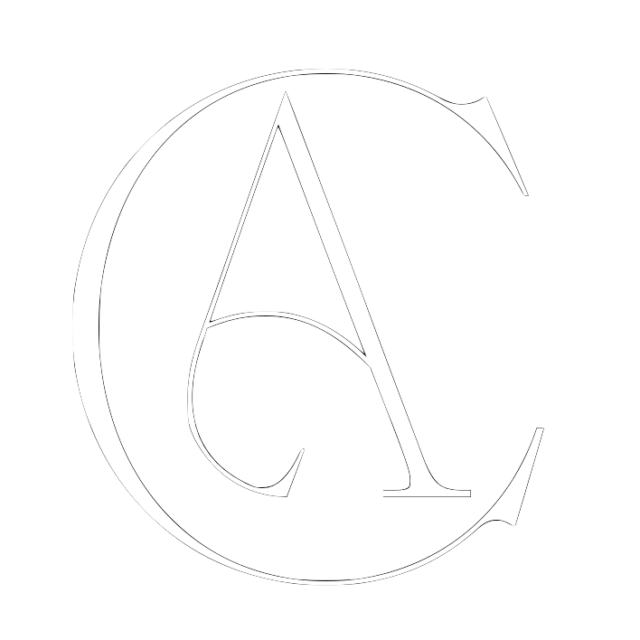

Guia de Marca — Edição 2026

Escritora, comunicadora e professora — desde 2006 no cantão da internet.
01
Camila L. Oliveira é escritora, comunicadora e professora. Sua presença pública nasce na interseção entre a crônica pessoal, o jornalismo cultural e o olhar educador — tudo atravessado por uma voz que é ao mesmo tempo irônica, lírica e mineira até os ossos.
Conhecida carinhosamente como Milla, ela escreve desde 2006 e transformou o blog em território literário próprio. Hoje atua também como professora na Etec Bartolomeu Bueno da Silva — Anhanguera e estudante na USP, sem deixar de publicar no Substack Direto do Cantão e no site oficial.
Sua marca pessoal é a autenticidade: não existe separação entre quem ela é e o que ela assina.
02
A assinatura visual de Camila é um logotipo tipográfico com caráter Art Nouveau — letras com personalidade própria, traços finos e curvas que evocam elegância literária. O magenta vibrante sobre fundo branco é a sua marca registrada.
03
A identidade cromática gira em torno do magenta — cor de quem não passa despercebida. O branco limpo equilibra a intensidade, e o tinta-da-china ancora os textos com seriedade literária.
04
Duas famílias em diálogo: a serifa elegante para o literário, a sans-serif geométrica e fina para o editorial. Juntas criam a tensão certa entre poesia e precisão.
Display — Títulos e Assinatura
Corpo Literário — Citações e Subtítulos
Interface e Legendas — Josefin Sans
05
A voz de Camila não é personagem — é ela mesma. Qualquer conteúdo publicado sob a marca deve soar como alguém que leu demais, viveu muito e não perdeu o senso de humor.
Usa a língua com cuidado estético. Imagens precisas, ritmo nas frases, palavras que carregam peso além do dicionário.
O humor é inteligente, nunca fácil. A ironia serve à verdade — não à performance. Ri de si mesma antes de rir de qualquer coisa.
Tem regionalidade na sensibilidade, não só nas referências. A comida, o tempo, o jeito de contar — tudo tem cheiro de Minas.
Não enrola. Tem opinião formada e sabe defendê-la. A precisão da comunicadora nunca some, mesmo na crônica mais pessoal.
O "eu" é o ponto de partida, não o ponto de chegada. As histórias pessoais abrem para algo universal.
Referência sem pedantismo. O repertório aparece naturalmente, não como cartão de visita.
06
Cada canal tem sua função e seu tom específico — mas todos reconhecíveis como sendo de Camila.
O hub central. Arquivo da produção literária, portal de serviços (Consultoria, Vamos Escrever?) e vitrine editorial. Tom: elegante, curado, definitivo.
O Substack é o coração pulsante — crônicas serializadas, a "Saga do Colégio", a voz mais íntima. Tom: confessional, literário, episódico.
Janela visual da marca. Fragmentos, nos bastidores da escrita, vida de professora-estudante. Tom: leve, espontâneo, com centelhas de ironia.
Expansão experimental. Onde Camila testa formatos, conversa com comunidades alternativas e aparece de modo mais descolado.
A Camila comunicadora. Coberturas editoriais (Eurovision, Lollapalooza, cultura pop brasileira). Tom: analítico, posicionado, com assinatura estilística própria.
07
A marca Camila L. Oliveira é uma assinatura literária. Qualquer uso — em parceria, publicação, convite ou colaboração — deve respeitar o seguinte: